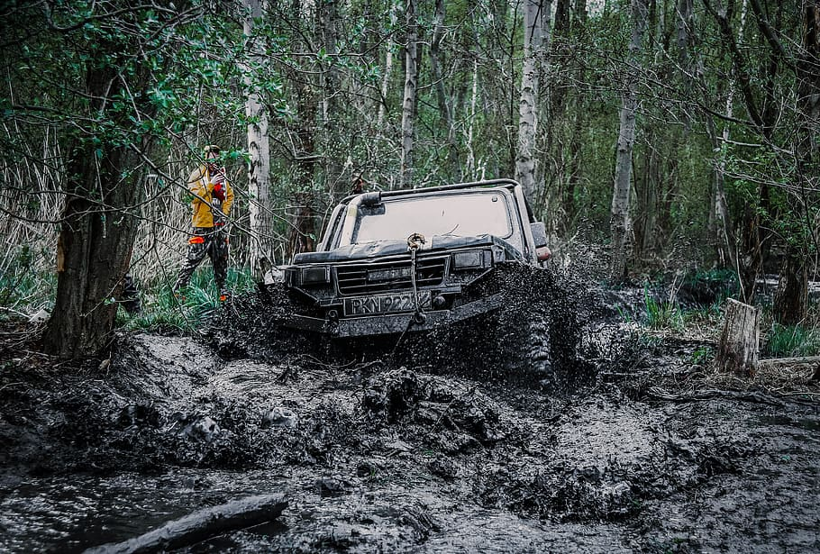

Cycle Off-road
Trips through local trails and woodland on a bicycle will give you that crucial first taste of rubber-and-rough, and is a slower (although no less technical) introduction to off-road..

4 x 4 Adventures
If you wear a heart rate monitor, you’ll see that a 30-minute moto in a jeep would be almost impossible to replicate in the gym, because you have factors like adrenaline involved, and you seem to be working that much more.
Off-road championship
The national junior and youth setup in the UK includes categories and classes for a spread of age groups and championships.